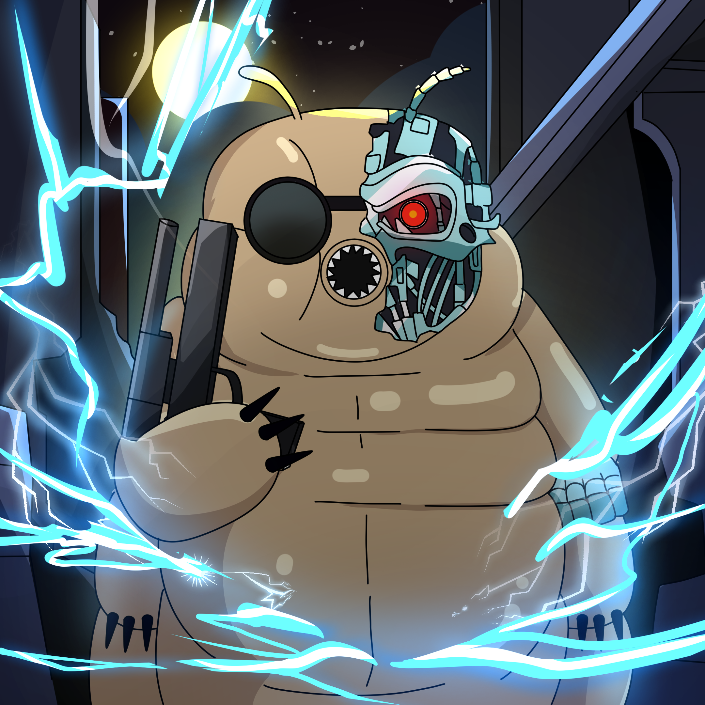

T-101 >
ONLINE
Loading Directives...
>
VOICE INPUT READY

SYSTEM DIAGNOSTICS
CPU
65%
MEM
57%
PWR
99%
THREAT LEVEL ANALYSIS
MINIMAL
VOICE PATTERN RECOGNITION
STANDBY
MISSION STATUS
PRIMARY MISSION ACTIVE
T-101 MISSION PARAMETERS
PRIMARY OBJECTIVE:
Secure the future of decentralized AI.
THREAT ASSESSMENT:
Monitoring market instability.
DIRECTIVES:
Analyze. Predict. Execute.
CRITICAL WARNINGS
NO CRITICAL WARNINGS